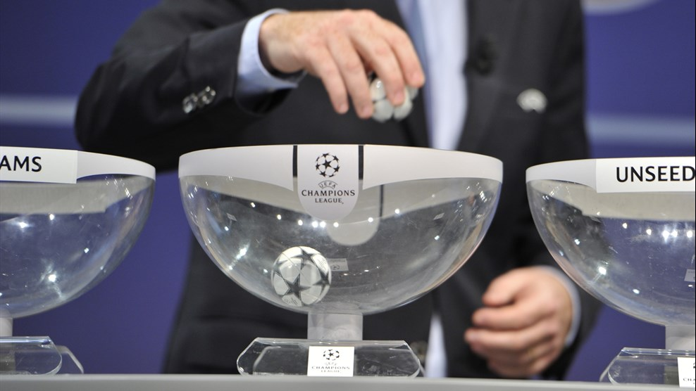

UEFA Champions League
A Liga dos Campeões da UEFA (em inglês: UEFA Champions League) é uma competição anual de clubes de futebol a nível continental, organizada pela União das Associações Europeias de Futebol (UEFA) e disputada por clubes europeus. É um dos torneios mais prestigiados do mundo e a competição de clubes mais prestigiada no futebol europeu, disputada pelas equipas mais bem classificadas nos respectivos campeonato nacionais na época anterior, sendo o número de vagas atribuídos consoante o ranking da UEFA. A final da Liga dos Campeões da UEFA é o evento esportivo anual mais visto em todo o mundo. A final da edição de 2012–13 teve o maior número de audiência até o momento, atraindo 360 milhões de telespectadores.

UEFA Champions League - Edição 2021/22
A UEFA Champions League 2021–22 é a 67ª temporada do principal torneio europeu de futebol de clubes organizado pela UEFA , e a 30ª temporada desde que foi renomeado de Taça dos Clubes Campeões Europeus para Liga dos Campeões da UEFA .
A final será disputada no Estádio Krestovsky, em São Petersburgo, Rússia. Foi originalmente programado para ser jogado na Allianz Arena em Munique, Alemanha. No entanto, devido ao adiamento e realocação da final de 2020, os anfitriões finais foram deslocados para trás em um ano, com São Petersburgo hospedando a final de 2022. O vencedor da Liga dos Campeões da UEFA de 2021–22 se qualifica automaticamente para a fase de grupos da Liga dos Campeões da UEFA de 2022–23, e também ganha o direito de jogar contra o vencedor da UEFA Europa League 2021-22 na UEFA Super Cup de 2022.
Sorteio da Fase de Grupos
Os 26 clubes previamente classificados para a fase de grupos se unem aos seis vencedores dos playoffs. Os times estarão divididos em quatro potes. O pote 1 tem o atual campeão, o campeão da Liga Europa e os campeões dos seis países melhores ranqueados e que não conquistaram a vaga com os títulos de 2020/21
Os seis primeiros colocados no ranking de países da Uefa de 2019 são: Espanha, Inglaterra, Alemanha, Itália, França e Rússia. Como o Bayern já tem uma vaga como campeão do torneio, o campeão da associação seguinte no ranking, o Porto, de Portugal, também entra no Pote 1. Os demais potes, 2 a 4, são determinados pelo ranking de clubes.
